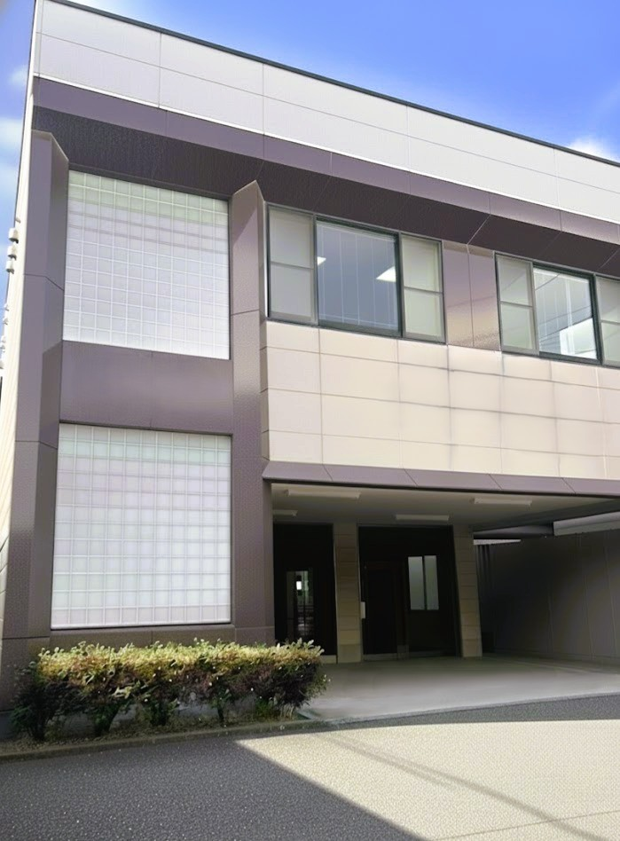

お客様とつながる
困りごとを丁寧に聞き、導入して終わりではなく、安心して使い続けられる環境まで支えます。
CORE VALUE
縁でつながるすべての人の幸せを願い、誠実に行動する。
迷ったときに立ち返るのは、その選択が誰かの安心や幸せにつながっているか、という問いです。
お客様とつながる。地域とつながる。仲間とつながる。
困りごとを丁寧に聞き、導入して終わりではなく、安心して使い続けられる環境まで支えます。
企業の通信環境を支え、還元型通信サービスを通じて、秋田の活動や未来にも貢献します。
わからないことを一人で抱え込まず、相談し、助け合いながらチームでより良い仕事をつくります。
あなたに合う入口を選ぶ
NEW GRADUATE
誰かの役に立つ仕事を、基礎知識研修と先輩同行から一つずつ学べます。
新卒採用ページを見るCAREER
これまでの経験を活かし、地域企業の相談相手として安心を届ける仕事です。
中途採用ページを見るTECHNICAL
資格と実務経験を活かし、確かな技術でお客様と地域の通信環境を支えます。
技術職経験者採用ページを見る働く環境・福利厚生
お客様や地域を支えるためには、働く仲間が安心して力を発揮できることも大切だと考えています。
完全週休2日制（土日祝）で、年間休日は120日以上。年末年始・夏季休暇、有給休暇も整えています。
勤務地は秋田県秋田市。転勤はありません。地域に腰を据えて、お客様との信頼を積み重ねられます。
通勤手当、残業手当、住宅手当、家族手当、経験者手当、資格手当などを支給します。
社会保険完備、定期健康診断、業務時の社用車貸与、ブラウブリッツ秋田ホームゲームの観戦無料チケットなどがあります。
給与や必須条件は職種ごとに異なるため、各採用ページの募集要項をご確認ください。
応募から内定までの流れ
フォームからご連絡ください。応募種別と応募職種は、フォームへ自動入力されます。
仕事内容や働き方をお話しします。まずは話を聞いてみたい方も歓迎です。
これまでの経験や、これから挑戦したいことを伺います。遠方の方はWEB面接も相談可能です。
条件面や入社時期を確認し、安心してスタートできるよう準備します。
応募前によくある質問
はい。法人営業は未経験の方も歓迎しています。入社後は先輩が同行・サポートしながら、仕事の流れを覚えていきます。
転勤はありません。秋田で腰を据えて働きたい方に向いています。
可能です。エントリー前のカジュアルな相談も歓迎しています。フォームでは「まずは話を聞きたい」とご記入ください。
通信回線工事、ビジネスフォン設置、LAN配線、OA機器設置などの実務経験が必要です。第二種電気工事士・工事担任者の資格は必須です。
はい、営業職など全くの未経験からでも多数活躍しています。
先輩社員がマンツーマンで同行し、丁寧にサポートするので安心してください。
COMPANY PROFILE
事業内容や会社の雰囲気を知りたい方は、会社紹介資料もご覧ください。
仲間と一緒に、楽しく前へ進む
コネクトには、お客様や仲間の困りごとに気づき、素直に相談しながら前へ進むメンバーが集まっています。わからないことを一人で抱え込まず、周囲と助け合える風通しの良さが私たちの強みです。地域の企業や暮らしを支える仕事に、誠実に向き合える方を歓迎します。

PEOPLE & CULTURE
「仲間のために」が、日々の相談しやすさや連携に表れています
わからないことを一人で抱え込まず、周囲にすぐ相談できる環境です。
営業・技術が連携し、それぞれの強みを活かしてお客様の課題に向き合います。
通信環境を支える仕事が、秋田の企業や暮らしの安心につながっています。
私たちが目指す未来と、その根幹
私たちの事業は、建設会社が「道路をつくること」に似ています。
どんな街でも、最初に必要なのは道路です。道路が整うことで人や企業が動き、街が発展していきます。
私たちは「情報の通り道」をつくり届ける会社です。企業が活動するために必要な通信・オフィス環境を整え、守り、困ったときにはすぐに相談できるよう支えています。
地域社会の発展は、地域企業の発展から。
私たちは、お客様と同じ目線で通信・オフィス環境を支えます。
縁あるすべての人を尊び、誠実に関わり合い、互いの幸せを願う会社であり続けます。
地域に求められる通信会社を目指して
中小企業の運営には通信技術が欠かせません。一方で、通信やネットワークの専門家が社内にいるケースはまだ多くありません。
だからこそ、私たちはお客様を知り、業界を知り、商品や技術にも応えられる会社として成長していきます。
地域の企業の成長を支える存在であり続けます。
仕事を通じて、私たちが秋田にできること
「地域のために」を、通信サービスとして形にした「コネクト光」
サービス収益の一部を、お客様が選んだ地域活動への支援金として還元するサービスです。
さらに詳しい事業内容や会社概要については、コーポレートサイトをご覧ください。
コーポレートサイトで会社概要を見る